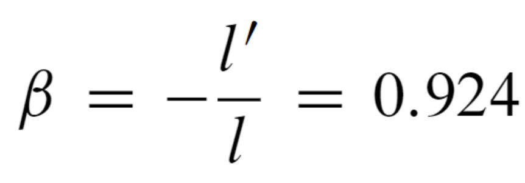
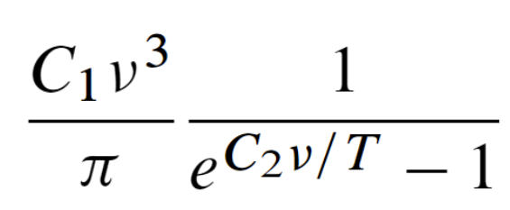
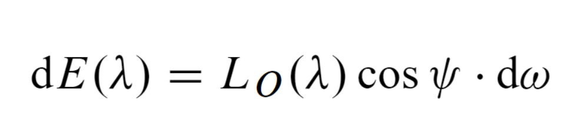

latex使用setmathfont函数配置数学环境字体
小叙
许久不更新，今日有闲写一笔。正所谓是忙中偷闲，明明毕业设计的任务大兵压境，结果还花费一个下午和晚上的时间泡在Latex的美化配置上，真是究极强迫症！
不过浪费这么多时间，也并不是毫无收获，至少，我实现了从去年9月以来的夙愿——终于有了一个彻底的、从自己制作而成的Latex模板了，不管是排版风格、自动序号还是公式里面每一个字母的字体、每一个数学符号的风格，都由我亲手调节得到，总的来说，应该是调教完毕。这个模板等会就上传到github上，可以给后面的同学提供参考。
言归正传
本篇博客的主题是使用\setmathfont函数配置Latex公式的风格（包括字体和字形等），一直以来我的疑问是：能不能通过某种特别的方式，让Latex公式里面的某些不好看的字母变得好看，例如：



本人极其不能忍受这里面的（甚至这个markdown自带的Katex公式都比它们好看），除了一少数的难看的字母以外，大多数符号和字母都是漂亮美观的，我并不想通过直接换一个字体库的方式解决这个问题，我试图通过\symbol函数将这几个不好看的字母替换了。如下：
1 | \newcommand{\sIgma}{{\text{\usefont{U}{nxlmi}{m}{it}\symbol{27}}\mspace{1mu}}} |
这是曾经某次尝试的结果，其中\symbol函数调用的是对应字符的unicode码，也可以是十进制或者八进制码，能替换，但是使用很局限，不能进行加粗和斜体等常规操作。

最终查阅大量文献和论坛，找到了一个“一劳永逸”的方法，即使用宏包\usepackage{unicode-math}（我实在是太菜了，才发现这么好的东西，这里附上unicode-math宏包的网站，也可以直接在命令行中输入texdoc unicode-math进行查看）